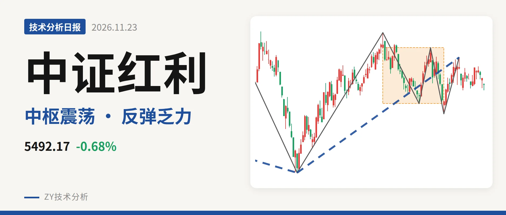

中证红利｜反弹高点下移，5492点留在中枢内

最近日线中枢 5386.04—5701.06点，收盘位于中枢之内
一句话：最新价5492点仍处在5386—5701点日线中枢内，反弹力度趋弱
🧭 走势结构：仍在反弹段内，但已回到中枢震荡
更大级别上，2024年10月8日的6209.67点一卖后，价格仍处在6209.67点以来的下跌段中；6月30日的4995.49点一买后走成上涨段，还没结束。该上涨段高见5646.01点后回落，最新收于5492.17点，既没跌破6月30日低点，也没站回前高。11月5日以来的回落尚未成笔，最高5596.04点、最低5460.31点，因此当前不是单边市，而是反弹段中的中枢震荡。

📍 中枢与位置：最新价落在最近中枢内，中枢中轴略下移
9月1日至10月23日形成最近一个日线笔中枢，区间5386.04—5701.06点，中轴5543.55点。最新收盘5492.17点在该中枢内部，距下沿约106点，距上沿约209点。相较2025年8月4日至2026年4月30日的中枢5518.46—5639.99点，最近中枢中轴从5579点下移至5544点，属于中枢下移，但两个区间仍重叠。价格在中枢内部，走势以震荡为主。
🧾 买卖点：下方类二买未破，上方旧卖点已降级
最近三个日线笔买点分别是6月30日一买4995.49点、9月29日二买5386.04点、10月23日类二买5328.30点。后两者所在下跌笔已经结束，但最新价未跌破，下方结构仍看5386点和5328点。上方2025年7月23日一卖5702.03点、2025年8月12日二卖5639.99点、2025年8月26日类二卖5649.82点，后来被3月3日6015.88点高点破坏，这几个卖点已只对应更小级别；当前上方结构位重新看最近中枢上沿5701点和9月1日高点5786.14点。

🔍 背驰：两段反弹红柱面积连续缩小，反弹不新强
最近两段同日线上涨笔比较，9月29日至10月14日红柱面积85，DIF高点11.1；10月23日至11月4日红柱面积65，DIF高点5.7。后者反弹高点5646.01点低于前高5701.06点，红柱面积减少，DIF高点降低，属于反弹不新强。最新MACD的DIF为-2.4，已下零轴，柱值为-5.2，说明当前回落尚未重新转为强反弹结构。
🧿 关键位置观察：5386点与5701点决定强弱，结构偏中性
若回落继续，先看9月29日二买5386点一线；若跌穿10月23日类二买5328点，6月30日以来上涨段就被破坏，要重新看4995点附近。若反抽回不到5701点上方，则无法摆脱9月1日至10月23日中枢，仍属中枢震荡。重新站上5701点并稳住，反弹才具备向上延伸的条件。当前下方类二买未破，上方5701点未站上，结构偏中性，反弹力度仍受压制。
⚠️ 本文为基于公开行情数据的缠论技术结构记录，由程序自动计算并生成，仅供学习交流，不构成任何投资建议。市场有风险，投资需谨慎。